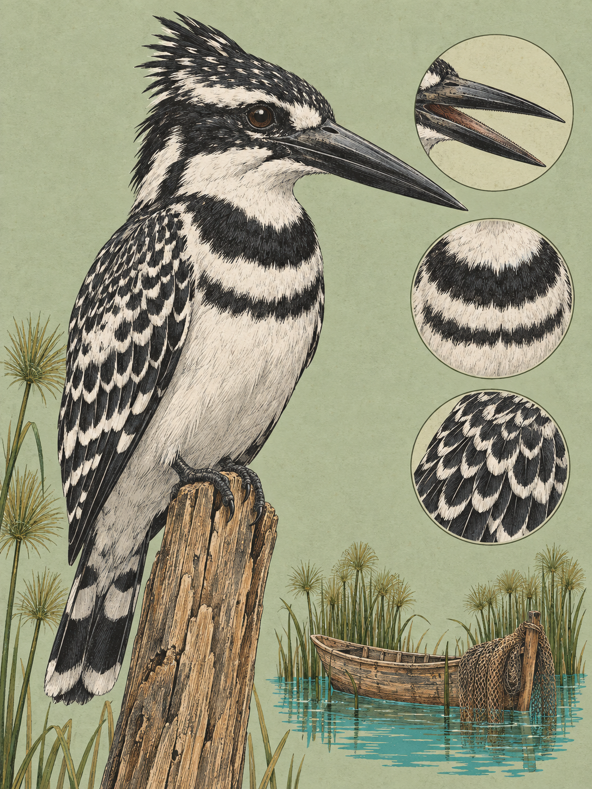

RIFT VALLEY
Ceryle rudis
Swahili: „Detepwani“

Über dem Lake Naivasha steht ein schwarz-weißer Vogel in der Luft und blickt senkrecht ins Wasser. Er rüttelt, ohne voranzukommen, manchmal mehrere Minuten lang, ein bis acht Meter über der Oberfläche. Dann stößt er senkrecht in die Tiefe und packt einen Fisch oder ein anderes Wassertier. Sein scharfer Ruf klingt wie „kwik-kwik“ oder „chit-chit“. Oft antworten andere Vögel der Gruppe. Der Graufischer jagt vor allem Fische, am Lake Naivasha darunter Buntbarsche. Krustentiere, Weichtiere, kleine Frösche und große Wasserinsekten ergänzen die Nahrung. In den frühen Morgenstunden bis zur Tagesmitte jagt er besonders häufig, am Nachmittag folgen Ruhephasen.
Sein wissenschaftlicher Name erzählt eine ältere Geschichte. Ceryle geht auf das klassische griechische Wort kērulos zurück. Aristoteles und andere antike Autoren erwähnten damit einen Vogel, der nicht näher bestimmt werden konnte und wahrscheinlich mythisch war. Das lateinische rudis bedeutet „wild“, „roh“ oder „unbearbeitet“. 1758 beschrieb Carl von Linné den Vogel als Alcedo rudis in der zehnten Auflage seiner Systema Naturae. 1828 stellte Friedrich Boie die Art in die neue Gattung Ceryle. Heute ist sie der einzige noch lebende Vertreter dieser Gattung.
Im Rift Valley ist der Vogel an Wasser gebunden, aber nicht an eine einzige Form davon. Er nutzt Seen, langsam fließende Flüsse, Staudämme, Bewässerungskanäle, überschwemmtes Grasland, Sümpfe und Mangroven. In Kenia kommt er von der Küste bis in Hochlagen von 2.300 bis 2.500 Metern vor. Er braucht keine Uferwarte. Mit seinem Rüttelflug erreicht er die freie Wasserfläche und jagt bis zu 20 Kilometer vom Ufer entfernt. Der Körper ist 24 bis 29 Zentimeter lang, die Flügelspannweite beträgt 45 bis 47 Zentimeter. Das Gefieder zeigt harte Schwarz-Weiß-Kontraste. Der Schnabel ist lang, schwarz und dolchförmig. Über dem Auge läuft ein weißer Streif, darunter ein schwarzer bis in den Nacken. Rücken und Mantel wirken durch weiße Federränder geschuppt. Das Brustband verrät das Geschlecht: Das Männchen trägt zwei schwarze Bänder, das Weibchen ein schmaleres, in der Mitte unterbrochenes. Jungvögel tragen ein durchgehendes, gräulich-schwarzes Brustband.
Für einen Vogel von bis zu 110 Gramm ist dieser Rüttelflug eine besondere Leistung. Lange nahm die Ornithologie an, dass andauerndes Rütteln bei Windstille nur sehr kleine Vögel beherrschten. Der Graufischer richtet seine Längsachse gegen den Wind, nicht nach der Sonne. Wird der Gegenwind stärker, legt er den Körper flacher und lässt die einströmende Luft beim Auftrieb helfen. So bleibt er über dem Wasser stehen, ohne seine Flügel ganz allein gegen die Schwerkraft arbeiten zu lassen.
Während die Flügel schlagen, bleibt der Kopf fast unbewegt. Der Schnabel zeigt nach unten, und das Auge hält die Beute durch die Wasseroberfläche im Blick. Dabei muss der Vogel Lichtbrechung und Wellenkräuselung ausgleichen, bevor er in den Sturzflug geht. Kleine Fische und Insekten kann er noch im Flug schlucken. Größere Beute trägt er zu einem Ast oder Stein und schlägt sie dort tot. Was wie ein Augenblick des Stillstands aussieht, ist deshalb genau vorbereitete Bewegung. Auch bei unruhigem Wasser bleibt der Blick auf die Stelle gerichtet, an der die Beute liegt. Ein Ansitz am Ufer ist für diese Jagd nicht nötig.
Am Nest wird aus dem Einzeljäger ein Mitglied einer Familie. Der Graufischer brütet kooperativ, eine bei Eisvögeln seltene Lebensweise. Heinz-Ulrich Reyer erforschte sie in den 1980er Jahren an den Seen Naivasha, Nakuru und Victoria. Junge Männchen, meist Söhne des Paares aus dem Vorjahr, werden als Helfer sofort aufgenommen. Sie füttern die Küken und verteidigen das Nest. Erwachsene, nicht verwandte Männchen werden zunächst vertrieben. Wenn trübes Wasser oder starke Wellen die Jagd erschweren und die Eltern an ihre Grenze bringen, duldet das Paar sie später. Sie bringen Futter und entlasten die Eltern. Die Söhne helfen damit ihren Geschwistern, die fremden Männchen investieren in eine spätere eigene Chance. Der Helfer brütet in diesem Jahr nicht, erhöht aber vermutlich seine Chance, später das Revier und das Weibchen zu übernehmen. So wird aus knapper Nahrung eine vorübergehende Familie.
Ende September und Anfang Oktober erreichen die Seen im Rift Valley meist ihren jährlichen Tiefststand. An Naivasha und Nakuru treten steile Schlamm- und Sandbänke hervor. In sie gräbt ein Paar eine etwa einen Meter tiefe Röhre, die sich hinten zu einer runden Brutkammer erweitert. Das Gelege umfasst drei bis sechs weiße Eier. Beide Partner brüten ungefähr 18 Tage, danach bleiben die Küken etwa 25 Tage in der Höhle. Dass die Vögel zu dieser Reisezeit bereits intensiv balzen und Höhlen graben, ist aus Klima und Fortpflanzungszyklus abgeleitet und deshalb nur vermutet. In geeigneten Steilufern liegen meist weniger als 20 Nester locker beieinander. Eier und Küken können dort Schlangen, Mangusten und kleinen Raubsäugetieren zum Opfer fallen. Die Steilwand ist für das Nest ebenso wichtig wie das Wasser für die Jagd. Der Graufischer ist ein Standvogel und unternimmt keine weiten Wanderungen. Sein Bestand gilt in den Quellen als stabil.
Über dem Lake Naivasha rüttelt der Graufischer wieder an derselben Stelle. Der Kopf bleibt fest, der Schnabel zeigt ins Wasser, und unter ihm wartet ein Fisch.
Für Menschen am Lake Naivasha ist der Graufischer vor allem ein sichtbarer Nachbar des Fischfangs. Er jagt teilweise dieselben Buntbarsche wie Subsistenz- und kommerzielle Fischer. Diese Nahrungskonkurrenz ist belegt, ihr tatsächlicher wirtschaftlicher Einfluss gilt jedoch als vernachlässigbar. Boote werden häufig ignoriert und können als künstliche Ansitzwarten dienen. Das macht den Vogel auf dem See auffällig, sagt aber nichts über eine besondere Nähe aus.
Eine spezifische Rolle in Legenden, Sprichwörtern, Ritualen, traditioneller Medizin oder Schmuck ist für die Gemeinschaften der Maa, Kikuyu, Samburu, Kamba und Giriama nicht belegt. Auch die Bedeutung des Swahili-Namens „Detepwani“ ist unbekannt. Der Schutzstatus ist dagegen klar: Die Weltnaturschutzunion führt die Art als „Least Concern“, also nicht gefährdet. Die weltweite Population wird in Datenbanken auf etwa 1,7 Millionen Individuen geschätzt. Im kenianischen Rift Valley bedeutet Naturschutz deshalb vor allem, Wasser und Ufer als Lebensraum lesbar zu halten und die Trübung der Gewässer zu beobachten. Dort entscheidet sich, ob der Rüttelflug Beute findet.
Wo und wann: Am Lake Naivasha, besonders vom Boot aus entlang der Papyrussäume, lohnt sich der Ansitz vom frühen Morgen bis zum späten Vormittag. Warte auf den Rüttelflug über dem freien Wasser. Ruckartige Bewegungen und schnelle Annäherungen von der Landseite können den Vogel vertreiben.
Brennweite: 150 bis 600 mm für den rüttelnden Vogel weit draußen. Bei einem Vogel nahe am Boot oder auf Schilf und Reling ist 100 bis 400 mm geeignet.
Bild-Idee: Halte den Kopf im Rüttelflug scharf und lass die Flügel in Unschärfe verschwimmen. Stelle für den anschließenden Sturzflug vorher auf die Wasseroberfläche direkt unter dem Vogel scharf, damit der Einschlag im Wasser im Bild bleibt.